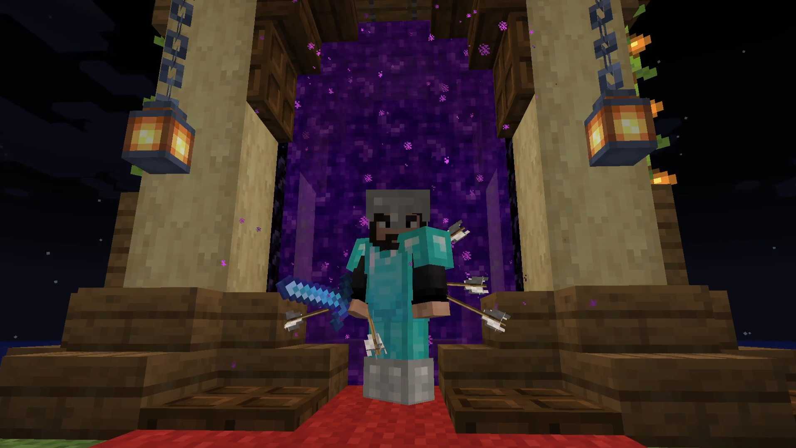
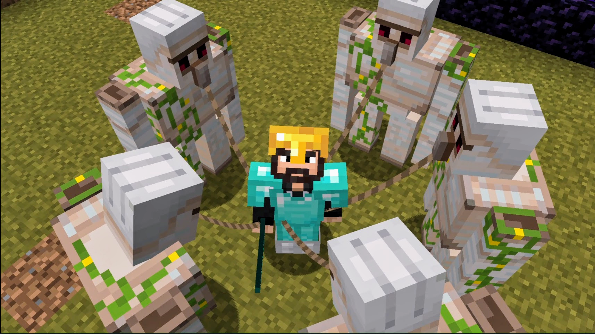
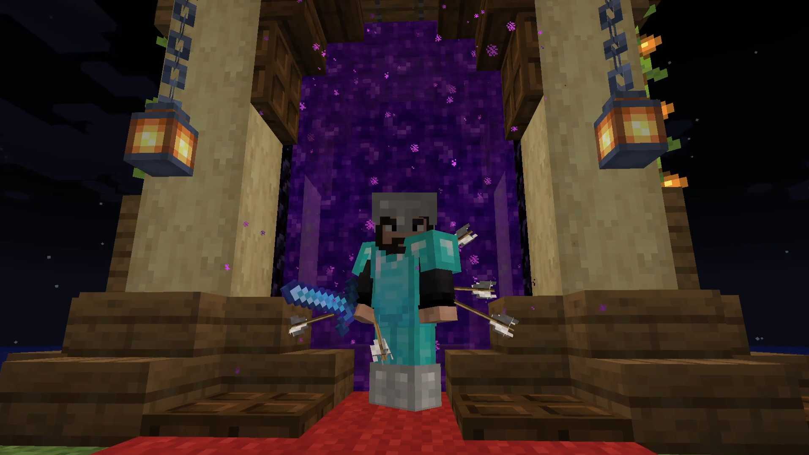
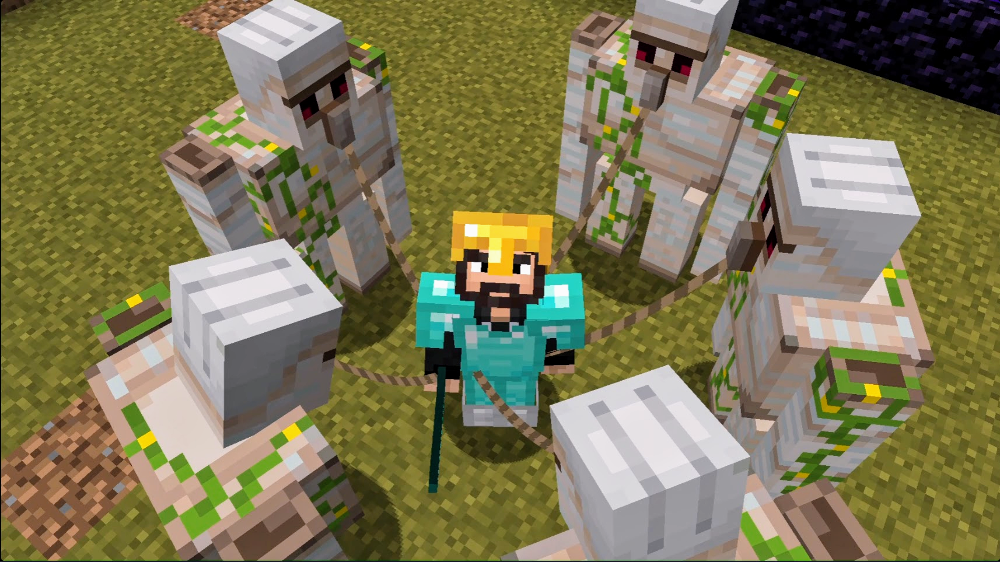

ABOUT ME
Hey, I'm JRYX (21M). Who am I, really? Still figuring that out, honestly. Currently, you'll find me knee-deep in code and probably building something ridiculous in Minecraft, which is a fun plot twist for someone with a mechanical engineering degree. Life's full of unexpected detours and chaos, right?
ADVICE
I used to think about God's existence, the purpose of humanity, whether humans are God's puppets, whether both God and the Devil are playing with us, if we will be depopulated by the 'J guys', and many other maze-like questions. But I realized at the end of the day, it has nothing to do with the life, not to me atleast. Our brain hasn't evolved enough yet to perform these tasks.
1. Curiosity is ok, but it is always about asking the right questions.
2. Learn the system, not the rules.
3. Time numbs, not heals.
THINGS I DO WONDER
1. Rocket and Submarine mechanics.
2. How frequency and wavelength seduce humans through colors and tunes.
3. The Egyptian Empire for its pyramids and the Roman Empire for its army.
THINGS I DO SCARE
1. Insects and Reptiles.
2. Death and things after that.
HOBBIES
Coding, Minecraft, VideoEditing, Streaming, Watching thriller movies and series, Learning Interesting things like engineering stuffs and ominous stuffs and sometimes I play music and create stuffs in blender.
FAVORITES
Game: Minecraft
Food: All foods which has chicken in it.
Tutor: BroCode, SuperSimpleDev.
Music: It changes every week, for now Slowdown, Fix you, Call my name.
YouTuber: Dream, Grox, SpeedSilver, Zack D Flims, Vsauce, 3b1b, Redbull.
PROJECTS
Personal Website
.
.
.
Loading...
Gallery
 


